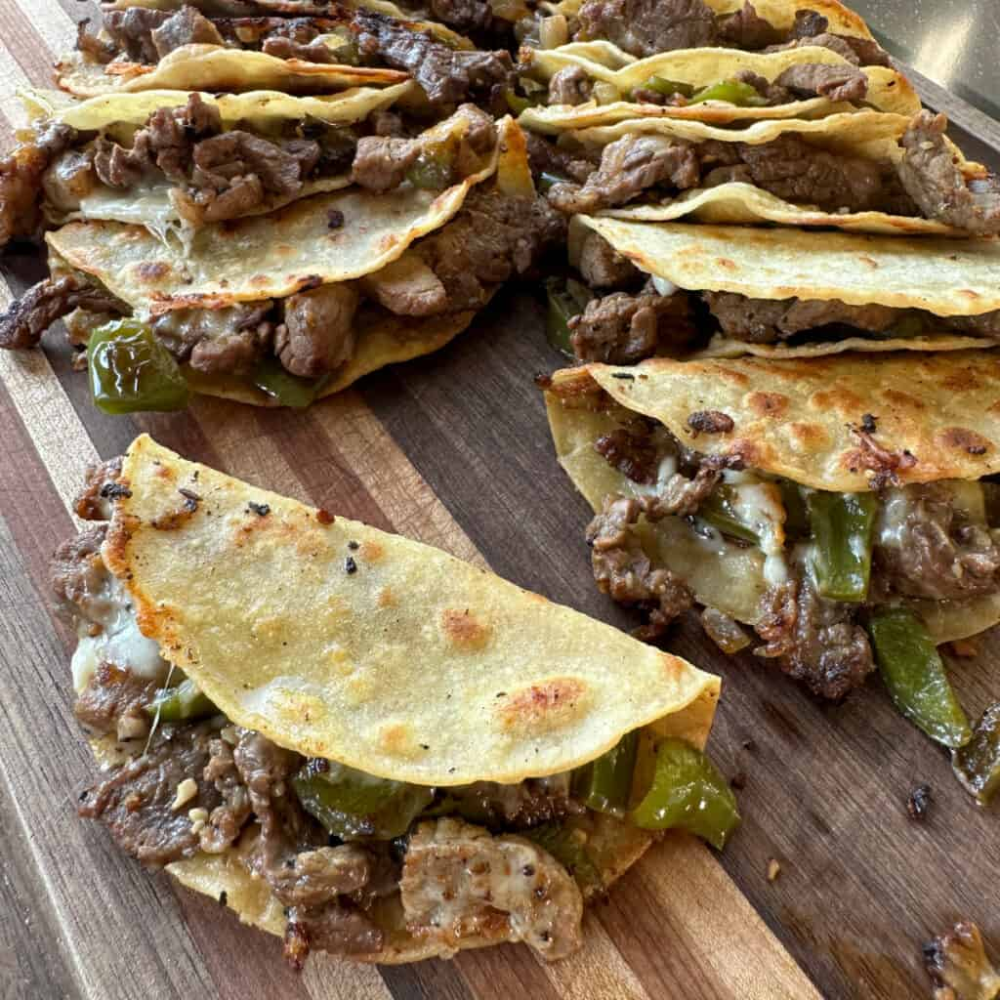

Weeknight Steak and Cheese Tacos

Steak and Cheese Tacos made on the griddle are an easy dinner the whole
family enjoys! These can be made on a griddle or in a big pan on the
stove. I like topping them with some Taco Bell Creamy Chipotle Sauce and
dipping them in sour cream. You can add any of your favorite taco
toppings!
Ingredients
- Skirt steak (2lb)
- 1 tbsp olive oil
- Montreal Steak Seasoning
- 1 TBSP minced garlic
- 2 TBSP lime juice
- 1/4 cup soy sauce
- 1 chopped onion
- 3 chopped green peppers
- 4 TBSP butter
- Shredded pepper Jack cheese
- White corn tortillas tortillas
- Taco Bell chipotle sauce
- Sour cream
Make the Steak Marinade
-
To marinade the steak for Steak and Cheese tacos, start by cutting
skirt steak against the grain into small pieces. Add the cut up steak
to a container. I used about 2 pounds of skirt steak, but strip steak
or sirloin steak would also work.
-
Once the steak is in a container, it's time to make the marinade! I
add 1 tbsp minced garlic, 2 tbsp lime juice, 1/4 cup of soy sauce, and
1 tbsp of olive oil to the steak. Stir well and then season generously
with some salt, pepper, and garlic powder.
-
Store in the refrigerator for at least an hour, but the longer it sits
in the marinade the better! While prepping the marinade, I also like
to go ahead and chop up one onion and the green peppers. I store them
in a container in the refrigerator until it is time to cook.
Instructions
Make Steak and Cheese Tacos
-
To make the steak and cheese tacos, heat a couple table spoons of
butter over medium heat on a griddle or in a pan on the stove. Once
the butter has melted add the chopped onion and green peppers. Season
the onions and peppers with some salt, pepper, and garlic powder.
-
Once the veggies have started to cook down, drain the marinade from
the steak and add that to the hot griddle. If cooking this on a stove,
use a second pan for the steak.
-
Once the steak is cooked to your liking and the vegetables are tender
combine the steak and veggies together.
-
Spread out 2 more tablespoons of butter and brown tortillas on both
sides. Add shredded pepperjack cheese to the tops of the tortillas
-
Next add the steak/veggie mixture on top of the cheese. Fold over the
tortilla and cook the taco on both sides until golden brown and
crispy.
Tips and FAQs
-
I used 2 lbs of skirt steak, but you can really use any steak you have
for this recipe. I've also used strip steak before.
-
I used Shredded Pepper Jack cheese, but any cheese could be used with
this recipe.
-
Top these with any of your favorite taco toppings! I kept it simple
with some Taco Bell Creamy Chipotle sauce that I buy from Walmart.
Fresh Pico de Gallo would be so good on these!
- This recipe makes 16-20 small tacos!